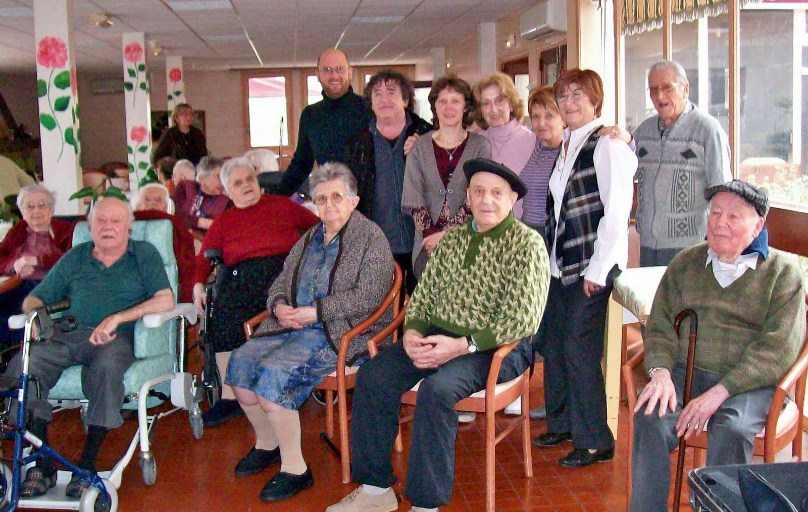

Home
Home

Every day lots of elderly person get to be relocated in retirement home , because most of the time they are handicapped or they are retired or they start losing their senses, they’re in need of assistance . Les petits frères des pauvres take care of them .
Assisting seniors can be hard , specially if they have Alzheimer,or if they are in there for a long time . The situations encountered in places like this can be tough, and helping those people is sometime impossible because of the lack of financial ressources or because most of the workers there are volunteers
To help those in need , les petits freres des pauvres is actually working on a project to create a partnership and a collective accommodation. This accommodation is supposed to develop the accompaniment of the volunteers in this association, to expand and recruit specialized volunteers and to help them accompany and finally to write a guide and sync the network of the organization.
The project is about :
The valorisation and support of volunteers, the integration of their action in the project of the institution and the development of an active partnership with the staff. They are also looking for people capable of helping Alzheimer patient. They also want this association to be recognized by the public and the government .Finally they also try to put in place a way that those elderly can go outside and visit people.
The main goal of les petits freres des pauvres is to change the way the world sees old people , to connect the elderly so they can be more than friends , and the last goal is that the elderly stay main actor of their life .
Christmas is one of the greatest time timeof the year for Les Petits Frères des Pauvres, it symbolizes the very essence of the association in particular thanks to the generosity of it donators who send their donation in majority in December and also to the volunteers who want to help when Christmas is coming.
The feeling of loneliness felt all year long is even greater during the Christmas holidays. And since the beginning, Les Petits Frères developped special actions for this event : gifts, dinner baskets, Christmas parties …